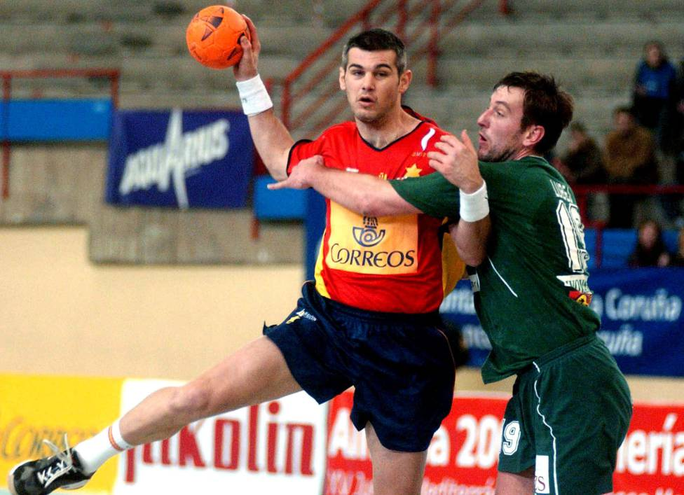
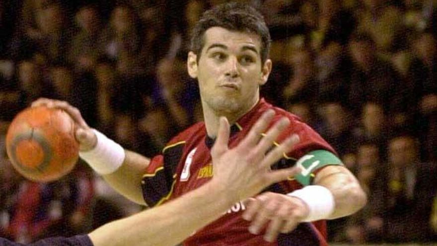

Inicio
Mundiales

Participó en dos Juegos Olímpicos, seis Mundiales, fue internacional con las categorías inferiores de la selección nacional, logrando consecutivamente en categoría júnior, dos subcampeonatos del mundo en 1987 en Rijeka ante la selección anfitriona de Yugoslavia y como anfitriones en 1989 en Pontevedra, ante la Unión Soviética, siendo Masip la sensación del campeonato junto al central soviético Dujshebaev. Fue internacional absoluto y capitán de la selección española durante 14 años (1989–2003), con la que disputó 205 partidos y anotó 656 goles, siendo el décimo y quinto respectivamente, con más partidos y goles de la historia del combinado nacional. Disputó con España dos Juegos Olímpicos, seis Mundiales y tres Europeos. Hizo su debut con la selección absoluta el 27 de junio de 1989, con 18 años de edad, en el «Torneo Internacional Tres Naciones» que se disputó en Pamplona. Su última participación en una gran competición con la selección española, se produjo en el Mundial 2003 de Portugal, donde capitaneó a la selección nacional que concluyó en cuarta posición, tras perder tras dos prórrogas en semifinales contra Croacia. Fue elegido mejor central del campeonato.
Obtuvo varias medallas durante los mundiales: obtuvo medalla de plata en el Mundial Junior de Yugoslavia 1987, obtuvo Medalla de plata en el Mundial Junior de España 1989 y obtuvo un premio por Mejor Lateral Izquierdo del Mundial (1): 2003.
